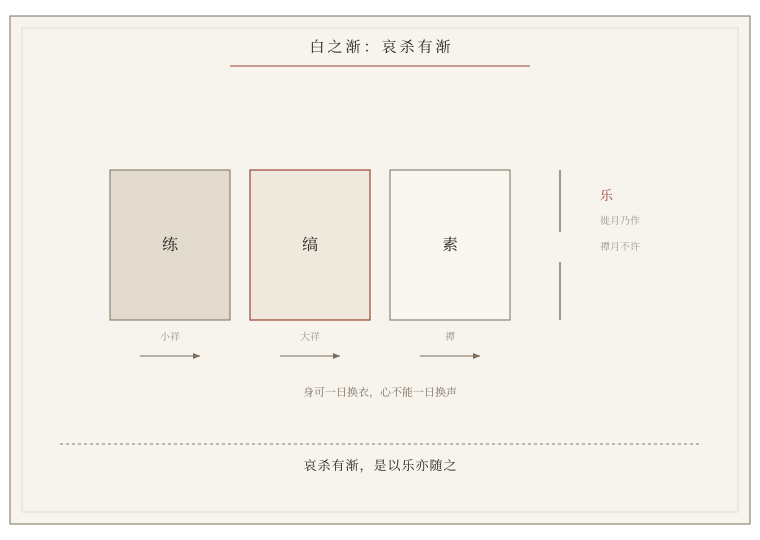

檀弓上 · 三·一百二十一 · 第 324 课
祥而缟，是月禫，徙月乐。
说什么事：大祥之祭，换缟冠；这个月行禫祭，到禫之次月才可奏乐。
落在哪一层：以「月」量哀之将尽。论「哀有渐，乐随之」。
为何编在此位：本批为卷八收尾。三百一十三课论小祥之服，此课论大祥与禫——丧服之复走到尽头。
【经】祥而縞，是月禫，徙月樂。
【注】縞冠，素紕也。／言禫明月可以用樂。
【疏】祥，大祥也。「缟」谓缟冠，大祥日著之，故《小记》除成丧者，其祭朝服缟冠是也。「是月禫，徙月乐」者，《郑志》曰：「既禫徙月而乐作，礼之正也。孔子五日弹琴，自省乐，哀未忘耳。逾月可以歌，皆自身逾月所为也。此非当月所受乐名。既禫，始得备乐，而在心犹未忘能欢，徙月之乐极欢也。哀杀有渐，是以乐亦随之也。」
祥 大祥，父母丧二十五月之祭。
缟 白色生绢。缟冠，以缟为冠。
素纰 冠缘用素。纰，冠之缘饰。
禫 除服之祭，二十七月。音淡。
徙月 过此月，入下一月。
哀杀 哀递减。杀，减也。
有渐 有次第，不骤。
大祥之祭，戴缟冠；这个月行禫祭，到禫后那一月，才可以奏乐。
两件事：一是冠，一是乐。
冠：大祥之日换缟冠。缟是白色生绢，比练更白更细——丧服之复，至此最白。
乐：这个月行禫祭，但乐不许在禫月，须到禫之次月。疏引《郑志》说得明白：「既禫徙月而乐作，礼之正也。」
所以丧之终，不是一天结束，是两步：先除服（禫），再等一月（徙月），然后乐。这一月，是礼留的最后一寸。
第一层 缟不是吉，是素 大祥换缟冠，看去很白，几乎与吉无异。但缟是素，素与吉之采相对；白不等于采。
礼在这里分得极细：素是「无文」，采是「有文」。丧服之复，复到「无文」而止，不复到「有文」。故缟冠之后，仍不是吉服。今人以「素」为一种颜色，古人以「素」为一种「无」。
第二层 禫与徙月：一月之差的分量 禫是除服之祭。除服已毕，身已复常；但乐仍不许，须再等一月。
为何？《郑志》一句：「哀杀有渐，是以乐亦随之也。」——哀是渐渐减的，乐也跟着哀走。身可以一天换衣，心不能一天换声。这一月，就是给心的。
礼最见分寸处，往往在这种「多留一月」上。留，不是拖延，是承认人有一段时间跟不上自己的衣服。
第三层 「哀杀有渐」是全章的眼 此四字，把全章的算法说尽：礼不规定「第几月可以乐」，礼规定「哀到何处才配乐」。
若只按日算，则人人同日而乐，不问其心；若按心算，则无凭。礼折中：以月为框，以「渐」为度。框是公共的，度是各人的。
第四层 孔子五日弹琴：礼给框，人自量 《郑志》引一事：孔子于祥后五日弹琴，「自省乐，哀未忘耳」。
礼许弹，孔子自己知道还不够。这就是礼与人的关系：礼不替你量心，只给你一个框；框内如何，你自己知道。
今人常问「什么时候可以」，此节答：礼说可以，你未必可以。二者不合时，听你自己的那一个。
与今日何干 今人丧后复工、复娱，多按「日子到了」办。此节给的尺是：日子到了，心未到，则再等一月。礼不催你，也不许你自欺。
| 左 | 右 |
|---|---|
| 祥 | 大祥，二十五月 |
| 缟 | 素，非采 |
| 素纰 | 冠缘 |
| 是月禫 | 除服之祭 |
| 徙月乐 | 再等一月 |
| 哀杀有渐 | 乐随之 |
| 孔子五日弹琴 | 礼许而心未许 |
画一处丧次之内，视点平视。案上并置三顶冠，自左向右颜色渐浅：左为练冠（略带米色）、中为缟冠（近白，冠缘一道素边）、右为一顶空架（无冠，只余冠架）。案左侧立一支小磬（或一具琴，只取轮廓），悬而不用。不画人、不写文字。赭色只用在中冠的冠缘一道。
